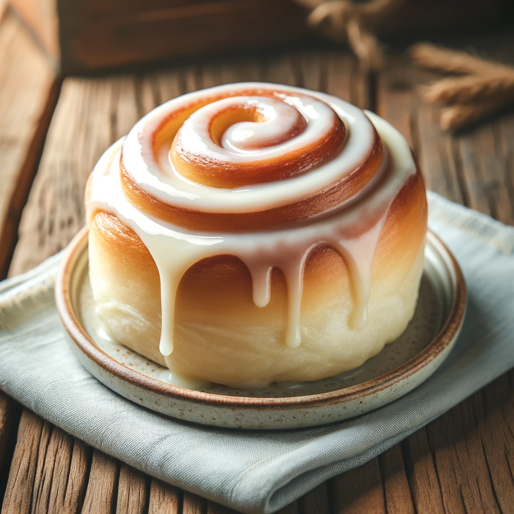

A Skyrim delicacy, the sweetroll is a soft, fluffy pastry with a golden-brown crust, generously drizzled with a
creamy glaze. Favored by both young and old across the land, it's a staple at feasts and a delightful treat for
any occasion.

Recipe:
Preheat your oven and grease a muffin tin.
In a bowl, mix flour, sugar, baking powder, and a pinch of salt.
In another bowl, beat together softened butter, eggs, and milk.
Gradually mix the dry ingredients into the wet mixture until smooth.
Pour the batter into the prepared muffin tin.
Bake until golden brown and a toothpick comes out clean.
For the glaze, whisk together powdered sugar, vanilla extract, and enough milk to achieve a thick yet
pourable consistency.
Once the sweetrolls are cool, drizzle them generously with the glaze.
Serve once the glaze sets, perfect with a cup of herbal tea or Nord mead.
This sweetroll captures the essence of Skyrim's culinary charm, combining simple ingredients to create a
delightful treat that brightens any table in the land.